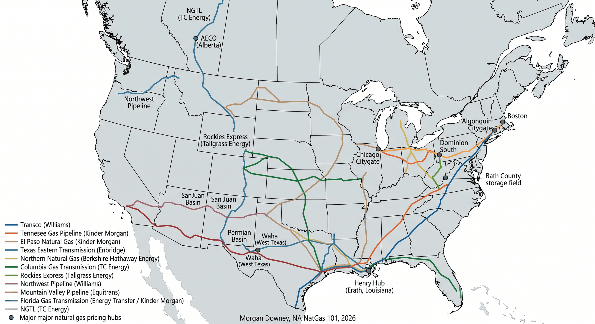
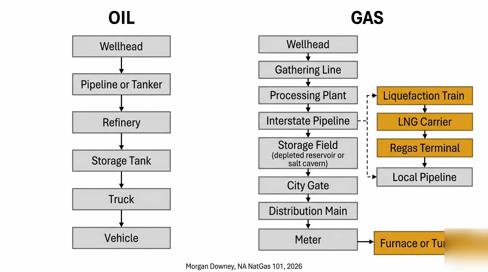
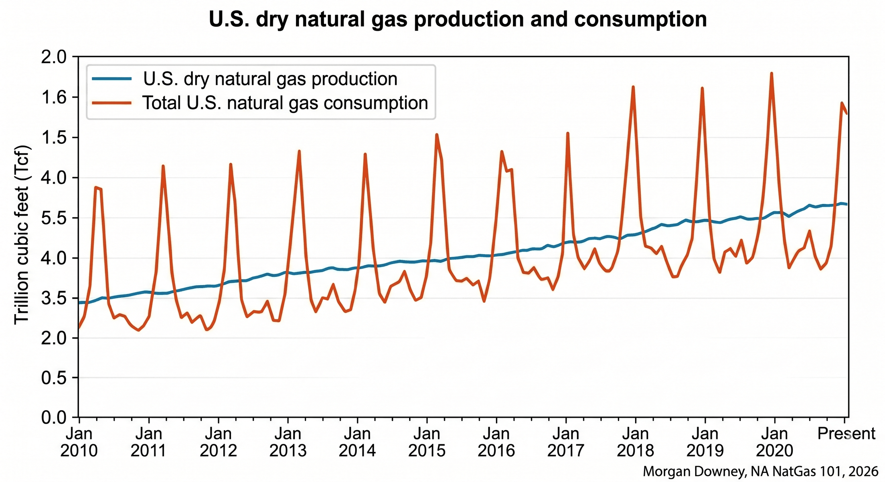

Why Gas is Different from Oil
Storage, basis fragmentation, captive infrastructure, demand seasonality, end-use lock-in, methane emissions, and the market structure consequences that follow.
On Sun February 14, 2021, a winter storm named Uri pushed sub-freezing air down to the Mexican border for the first time in a generation. By Mon February 15, Texas was below freezing. Roughly 4.5 million Texans lost power. At the wellhead, water in gas-gathering systems froze solid and shut in around half of Permian and Eagle Ford gas production for the better part of a week. The Electric Reliability Council of Texas, ERCOT, the grid operator that serves 90 percent of the state, lost a third of its generating capacity inside 12 hours, including gas-fired plants whose fuel deliveries had stopped.
ERCOT runs an energy-only market with a $9,000 per megawatt-hour administrative price cap. On the morning of Mon February 15 the real-time wholesale electricity price hit that cap and stayed there. It stayed there for 87 consecutive hours. At the same time, physical natural gas at the Oneok Oklahoma hub, the Houston Ship Channel, and the Waha hub in West Texas traded above $200 per MMBtu on Tue February 16, with some intraday prints above $1,000. The Henry Hub front-month, the national US benchmark, never moved much. Henry Hub is hundreds of miles east, in Erath, Louisiana, on a system that still had gas. The basis blew out by a factor of more than 100.
By the time the storm cleared the following weekend, at least 246 Texans were dead, mostly from hypothermia and carbon monoxide poisoning from improvised heating. Brazos Electric Power Cooperative, the state’s oldest and largest electric co-op, filed for Chapter 11 bankruptcy on Mon March 1, 2021, citing $1.8 billion in February gas and power purchases it could not pay. Griddy, a retailer that passed wholesale prices through to residential customers, was forced into bankruptcy after sending some households four-figure power bills for a single week.
Oil markets do not behave this way. The point of this chapter is to explain why.
Storage
Oil is a liquid at room temperature. It can be stored in any tank, any cavern, any tanker hold, anywhere on earth, indefinitely. The Strategic Petroleum Reserve sits in salt domes on the Gulf Coast, but it could just as easily sit in steel tanks at Cushing, Oklahoma, or in floating storage off Singapore. Inventory adjusts week to week based on price and demand. Cushing fills, Cushing drains, and the cycle is mostly indifferent to the calendar.
Natural gas is a gas at room temperature. To store a useful amount, the molecule has to be compressed into a porous reservoir, dissolved into a salt cavern, or chilled to minus 162 degrees Celsius and held as a liquid in a vacuum-insulated tank. The United States has roughly 4.7 trillion cubic feet of working gas storage capacity across about 400 facilities, of which the great majority are depleted oil and gas reservoirs in Pennsylvania, Michigan, West Virginia, Louisiana, and the Texas Gulf Coast. Salt caverns, mostly clustered along the Gulf Coast and in northern Michigan, hold a smaller share but cycle far more rapidly. Above-ground LNG tanks at peak-shaving plants and import terminals hold a small reserve, mostly for very cold days in New England and the mid-Atlantic.
The result is a hard seasonal cycle. Producers and pipeline shippers inject gas into storage from April through October, when heating demand is low. They withdraw from November through March. Every Thursday at 10:30 a.m. Eastern, the Energy Information Administration releases the Weekly Natural Gas Storage Report, and the front of the futures curve responds inside 30 seconds. A draw 20 billion cubic feet larger than expected on a cold week in February can move the prompt contract more than 5 percent. Oil has no equivalent. The American Petroleum Institute and EIA crude inventory reports move WTI by a percent or two on a busy day.
The injection-withdrawal cadence shapes the entire price curve. Summer gas trades at a discount to winter gas because storage operators are willing to bid for cheap molecules to inject and recover the seasonal spread. The shape of the Henry Hub futures strip, with its January and February peaks and its August trough, is the visible signature of the seasonal storage trade. Oil curves do not look like that. Oil curves slope on the basis of inventory levels and short-rate carry, not on the calendar of furnace demand.
Pricing Fragmentation
Oil has two global benchmarks. Brent prices roughly two-thirds of internationally traded barrels, WTI prices most of the rest. Both are deliverable into the global tanker fleet. A barrel of Saudi crude can move to Rotterdam, Long Beach, or Singapore depending on which destination prices the highest. The arbitrage closes inside a few cents per barrel within the time it takes a VLCC to sail.
Gas does not work that way. The benchmarks are physically and politically siloed. Henry Hub, named for the Sabine Pipe Line junction in Erath, Louisiana, prices most US pipeline gas. AECO, the Alberta Energy Company hub, prices Western Canadian gas. TTF, the Title Transfer Facility in the Netherlands, prices most of European gas. JKM, the Japan-Korea Marker assessed by S&P Global Platts, prices spot LNG cargoes into northeast Asia. NBP in the UK, PEG in France, PVB in Spain, and the Chinese city-gate prices each occupy their own corner. There are dozens more.
Within the United States there are 75 or more pipeline pricing points, called basis points, that trade at a daily premium or discount to Henry Hub. The Waha hub in West Texas, the takeaway point for Permian gas, has traded as low as negative $7 per MMBtu when pipeline capacity could not move associated gas out of the basin. The Algonquin Citygate, the entry point for gas into eastern New England, traded above $80 per MMBtu during the January 2018 cold snap when local pipelines were full. The Northeast hubs, the Rockies hubs, and the West Coast hubs each have their own demand and pipeline geometry.

The reason for the fragmentation is the absence of arbitrage. Oil moves on tankers between any two ports. Gas moves on pipelines between fixed endpoints, or on a small fleet of LNG carriers between a few dozen liquefaction and regasification terminals. When the Algonquin Citygate prints $80, no one can sail a tanker of Henry Hub gas to Boston in the morning to capture the spread. The pipeline is full, and there is no other way for the molecule to arrive. Basis blows out, and stays blown out, until the cold passes.
Basis itself is a tradable instrument. The CME Group lists basis swaps for most major US pricing points, and a working gas trader spends as much time on basis exposure as on the absolute Henry Hub level. A power plant in New England buys Henry Hub futures plus an Algonquin basis swap to lock in delivered cost. The two legs together are the actual hedge. There is no single price for gas. There are many prices, and the spreads between them carry most of the information.
Infrastructure Dependency
A barrel of crude is fungible across the global tanker fleet. A molecule of methane is captive to whatever pipe it was born into. To move gas, the producer needs a gathering line to a processing plant, a processing plant with capacity to take it, an interstate pipeline with takeaway capacity, and a buyer at the other end with a meter and a contract. To move it across an ocean, the producer additionally needs a liquefaction train, a 175,000 cubic meter LNG carrier, and a regasification terminal at the destination. Every link is a multi-year, multi-billion-dollar, FERC and DOE permitted asset.

The economic consequence is that gas can be stranded. The Permian Basin in West Texas produces around 25 billion cubic feet per day of associated gas as a byproduct of crude oil drilling. Pipeline takeaway capacity has historically lagged production. When the pipes are full, producers either shut in the gas, sell it at a negative price at Waha, or flare it. As recently as 2019, around 5 percent of Permian gas production was being flared at the wellhead, the equivalent of the entire residential gas consumption of Israel. New pipelines, the Gulf Coast Express in 2019, the Permian Highway in 2021, the Whistler in 2021, and the Matterhorn Express in 2024, have closed most of the gap. Flaring rates have come down. The structural problem has not gone away.
The Marcellus Shale in Pennsylvania, the largest gas producing region in the United States, has the opposite problem. There is more gas than there is pipeline capacity to move it. The Atlantic Coast Pipeline, a $5.1 billion project to move Marcellus gas to the Carolinas, was cancelled in 2020 after six years of permitting and litigation. The Mountain Valley Pipeline, started in 2014 and originally budgeted at $3.5 billion, eventually came online in 2024 at a cost above $7.5 billion after the Fiscal Responsibility Act of 2023 was passed to override the remaining permit challenges. New England, only a few hundred miles north of the largest gas field in North America, still imports LNG in winter because the pipelines do not exist.
The same logic operates globally. Russian gas reaching Europe required the Yamal pipeline through Belarus, the Brotherhood pipeline through Ukraine, the Nord Stream and Nord Stream 2 lines under the Baltic, and the Turkstream lines under the Black Sea. The 2022 invasion of Ukraine, the 2022 sabotage of Nord Stream, and the end of the Ukraine transit contract on Wed January 1, 2025 cut most of those flows. Russian gas could not be redirected by tanker because there were no liquefaction trains pointing at the right markets. Stranded production at Yamal stayed stranded. The molecule does not move without the pipe.
Demand Seasonality
Oil demand is steady. Gasoline, diesel, and jet fuel feed transportation systems that operate every day. World oil demand swings about 3 percent between the strongest and weakest quarters in a normal year. Refiners adjust runs, inventories absorb the rest, and the price effect is muted.
Gas demand swings 4 to 5 times between summer and a cold winter morning. US dry gas consumption averages around 75 billion cubic feet per day in a mild July. On a single morning during a polar vortex, that figure can exceed 150 billion cubic feet, with peaks reported above 165 billion cubic feet during the January 2024 Arctic blast. The swing is dominated by space heating. Roughly 60 million American homes, plus most commercial buildings in cold climates, run on gas furnaces or gas boilers. When the temperature drops, demand surges within hours.

The metric the industry uses is the heating degree day, defined as the difference between 65 degrees Fahrenheit and the daily average temperature. A 10-degree-day morning in New England draws roughly twice the gas of a 5-degree-day morning. Weather forecasts move the gas market more than any other input. The 6-to-10 day temperature outlook from the National Weather Service is published twice daily and traders adjust positions inside the minute it is released.
The second source of seasonality is power generation. Combined cycle gas turbines, CCGT plants, are the dominant marginal generator on most American grids. When wind drops on a cold winter morning, or when solar drops on a hot summer afternoon when air conditioning peaks, gas-fired generation steps up to fill the gap. The growth of variable renewables has not reduced gas demand for power. It has shifted that demand toward shorter, sharper peaks. PJM, the grid operator covering 13 mid-Atlantic and Midwest states and 65 million people, regularly burns more than 12 billion cubic feet per day of gas on a January morning, twice its summer baseline.
Oil markets have nothing equivalent. Refineries run all year. Cars are driven all year. Jet fuel demand peaks in summer and at Christmas, but the swing is smooth and a refinery can pivot a few percent of its yield without drama. A gas system on a cold morning has no spare capacity, no second pipeline, and no substitute fuel that can show up by lunchtime.
Energy Density and End-Use Lock-In
A gallon of gasoline holds about 115,000 British thermal units. A standard cubic foot of natural gas holds about 1,030. Gasoline is energy-dense, liquid at ambient pressure, and trivial to transport in five-gallon jugs, 25-gallon truck tanks, or 200-million-gallon ocean tankers. A driver who finds a Shell pumping diesel can use an Exxon, a BP, or a Pemex without changing the vehicle.
Gas is none of those things. Methane is gaseous, light, and difficult to compress. To get useful energy out of it, the molecule has to arrive at a fixed appliance: a residential furnace, a commercial boiler, a combined cycle turbine, an ethylene cracker, a methanol synthesis loop, or a urea reactor. Each of those appliances cost between thousands and billions of dollars to build, and each was designed around a specific gas pressure, composition, and delivery point.
This produces end-use lock-in. A homeowner with a gas furnace cannot easily switch to fuel oil; the burner, the venting, and the storage tank are all wrong. A petrochemical operator with an ethane cracker cannot easily switch to naphtha feedstock without a major capital project. A combined cycle gas plant in Pennsylvania cannot run on diesel for more than a few hours without compromising its emissions permit and its turbine warranty. Once the gas appliance is installed, it stays installed for 20 to 40 years, and the demand for the molecule stays in place even when the price spikes.
The implication for the market is that short-term demand is inelastic. When Henry Hub prints $15, residential customers do not turn off their furnaces. Industrial buyers may switch a few percent of dual-fuel boilers to fuel oil, but the bulk of gas demand keeps showing up. Producers know this. Storage operators know it. Speculators know it. The result is that gas prices can spike farther and faster than oil prices because there is no quick demand response on the other side. The substitution that does happen is on the supply side, with associated gas, with LNG cargo diversions, and with storage withdrawals, and all of those take days or weeks to register.
The Molecule Itself
Methane is one carbon atom and four hydrogens. It burns clean: combustion produces carbon dioxide and water and not much else. For most of the 20th century the regulatory conversation about gas was about the carbon dioxide it released downstream, and on that count it compared favorably to coal and to fuel oil.
The 21st century has shifted the conversation upstream. Methane that escapes unburned is itself a powerful greenhouse gas. The IPCC AR6 (2021) estimates the global warming potential of methane at about 82 times that of carbon dioxide over a 20-year horizon and about 29 times over a 100-year horizon. A leak rate of 3 percent across the gas value chain, from wellhead to burner tip, erases most of the carbon dioxide advantage that gas has over coal. The actual global average leak rate is contested. Satellite measurement projects, including TROPOMI on the European Space Agency’s Sentinel-5P and the MethaneSAT mission launched in March 2024, have repeatedly found leak rates higher than what producers self-report.
Regulation has followed. The US Environmental Protection Agency finalized a methane emissions rule for new and existing oil and gas operations in December 2023, requiring quarterly leak detection surveys at most facilities and phasing out routine flaring. The European Union’s methane regulation, in force from 2024, applies an import standard: by 2030, gas imported into the EU must come from suppliers who can document leak rates below specified thresholds. Independent certification programs, including MiQ, rate individual gas-producing assets on methane intensity and offer certified differentiated cargoes.
The effect on price is small but visible. LNG cargoes from low-methane-intensity producers have begun to clear at small premiums to standard cargoes when sold to European buyers with mandate exposure. The premium is currently in the range of single-digit cents per MMBtu. The premium will widen as the EU thresholds tighten through the late 2020s.
Oil does not face the same upstream-emissions accounting in the price. Methane intensity is one of the structural cost differences between the two molecules, and it is now a line item in long-term supply contracts.
Market Structure Consequences
Pull the six features together. Storage is hard, basis is fragmented, infrastructure is captive, demand swings violently, end-use is locked in, and the molecule itself is now a regulated emission. Each feature in isolation looks technical. Together they explain why gas markets behave the way they do.
The first consequence is volatility. Henry Hub prompt month implied volatility runs roughly 50 to 80 percent on an annualized basis in normal conditions, and spikes above 150 percent in cold snaps. WTI prompt month implied volatility runs in the 25 to 45 percent range in normal conditions. Gas is structurally two to three times as volatile as oil, and the spikes are larger and more frequent.
The second consequence is the asymmetry of single-asset failures. A single pipeline outage, a compressor station fire, an LNG train trip, can swing prices 30 to 50 percent within hours, because the captive nature of the infrastructure means there is no immediate substitute path. The Freeport LNG terminal explosion on Wed June 8, 2022, took 2 billion cubic feet per day of US export capacity offline for eight months. Henry Hub fell 16 percent in two trading sessions on the announcement, because that 2 Bcf/d had nowhere else to go and added immediately to domestic supply. TTF in Europe rose by an equivalent amount on the loss of expected cargoes. One asset, two markets, both moved.
The third consequence is the way regional crises become systemic. The February 2021 Texas freeze that opened this chapter was a regional weather event that turned into a financial crisis for utilities and a political crisis for ERCOT and the Texas Public Utility Commission. The 2018 Boston cold snap moved spot gas prices in New England to levels that drew an LNG cargo across the Atlantic from Russia, an outcome no one had predicted. The 2022 European energy crisis, set off by a single decision in Moscow about pipeline flows, rewrote the global LNG flow map for a decade and accelerated a build-out of regasification terminals from the Netherlands to Greece.
The fourth consequence is the global integration that LNG has now imposed on what was a fragmented continental market. As recently as 2010, US gas, European gas, and Asian gas traded on three separate physical systems with limited arbitrage between them. The build-out of US export capacity from 2016 onward, which took US LNG export volumes from zero to roughly 14 billion cubic feet per day by early 2026, linked the three markets through the price of a deliverable cargo. When TTF rises, US producers and traders ship more cargoes to Europe, Henry Hub firms, and JKM rebalances against TTF. The arbitrage is not free, the shipping costs and reloading costs are real, but the linkage is now permanent.
Gas is not a slow cousin of oil. It is a different commodity with its own physics, its own infrastructure, its own seasonality, its own regulatory frame, and its own price behavior.
Boston, January 2018
On Sat January 20, 2018, in the middle of a North American cold spell that would push Algonquin Citygate spot gas above $80 per MMBtu, the LNG carrier Gaselys delivered a cargo to the Distrigas terminal at Everett Marine Terminal in Boston Harbor. The Gaselyshad loaded part of her cargo at the Yamal LNG facility on the Russian Arctic coast, a project majority-owned by Novatek with French and Chinese partners, and transferred it via ship-to-ship in the United Kingdom before continuing to Boston. United States sanctions on Russian energy projects had been tightened the previous summer under the Countering America’s Adversaries Through Sanctions Act, but the Yamal cargo was not directly sanctioned, and the trade was legal.
The optics were uncomfortable. The largest natural gas producing country on earth, in the middle of a domestic shale boom, was importing Russian gas to keep New England warm. Senators from both parties wrote letters of complaint. The Trump administration condemned the cargo. Distrigas pointed out that Boston had no other source of supply on a cold weekend. Algonquin Gas Transmission was full. The Maritimes and Northeast Pipeline was full. There were no spare US pipelines that could move Henry Hub gas to Massachusetts in time. The choice was Russian LNG or rolling blackouts.
Three years later, the same logic produced the Texas grid collapse. Eight years later, it produced the European scramble after Russia cut pipeline flows. The lesson is the same. When a gas system runs out of capacity, the molecules that show up are the ones that physically can show up. Politics, sanctions, and price are second-order considerations. The pipeline either reaches the customer or it does not.
The structural differences described in this chapter did not arise from accident. They arise from a long history of how the North American gas industry was built, the firms and institutions that move the molecule through it, and the geology of how methane formed and where it accumulated. The next three chapters cover that material in order. The next one starts in 1816, with coal.
![A stratigraphic column for the Appalachian Basin in southwestern Pennsylvania, from surface at 0 feet to 10,000 feet, showing Pleistocene glacial cover at the top, then Pennsylvanian coal-bearing rocks, Mississippian limestones, Upper Devonian Bradford and Venango sandstones, Middle Devonian Marcellus shale, Lower Devonian Oriskany sandstone, Silurian Salina salt and Lockport dolomite, and Upper Ordovician Utica shale at the base. The right column lists the corresponding geological periods and ICS-standard ages in millions of years (Pleistocene 2.6 Ma, Pennsylvanian 323 Ma, Mississippian 359 Ma, Upper Devonian 372 Ma, Middle Devonian 393 Ma, Lower Devonian 419 Ma, Silurian 444 Ma, Upper Ordovician 458 Ma).](images/ch04-fig4-4-fc1619.png)
![A horizontal stacked bar chart showing typical gas-stream composition by basin. Seven rows: Marcellus dry NE (97% methane, 2.5% ethane, trace heavier), Marcellus wet SW (80% methane, 12% ethane, 5% C3+, 2.5% N2), Permian associated (75% methane, 10% ethane, 8% C3+, 5% N2, 2% CO2), Haynesville (96% methane, 2% ethane, 1% C3+), Eagle Ford condensate (70% methane, 12% ethane, 12% C3+, 3% N2, 3% CO2), Bakken associated (60% methane, 18% ethane, 17% C3+, 3% N2), Hugoton conventional (75% methane, 5% ethane, 8% C3+, 10% N2, 1% helium). Each bar sums to 100%.](images/ch05-fig5-1-3bbe82.png)
![A schematic cross-section of a horizontal shale well from surface to total depth. Conductor casing at 100 feet, surface casing at 1,500 feet, intermediate casing at 5,500 feet, production casing running full length to the toe. The wellbore drops vertically through Pennsylvanian, Mississippian, and Upper Devonian rock, then turns through a build section and lands in the Marcellus shale at 7,500 feet, running horizontally for 12,000 feet to the toe in the Marcellus producing interval above the Onondaga limestone.](images/ch06-fig6-1-b5cf06.png)